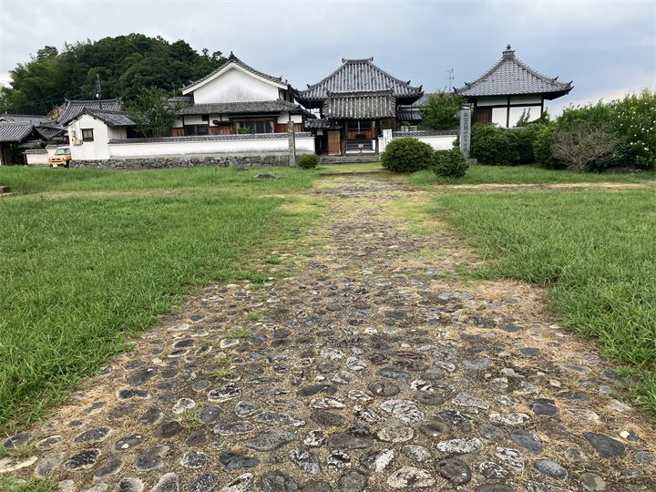
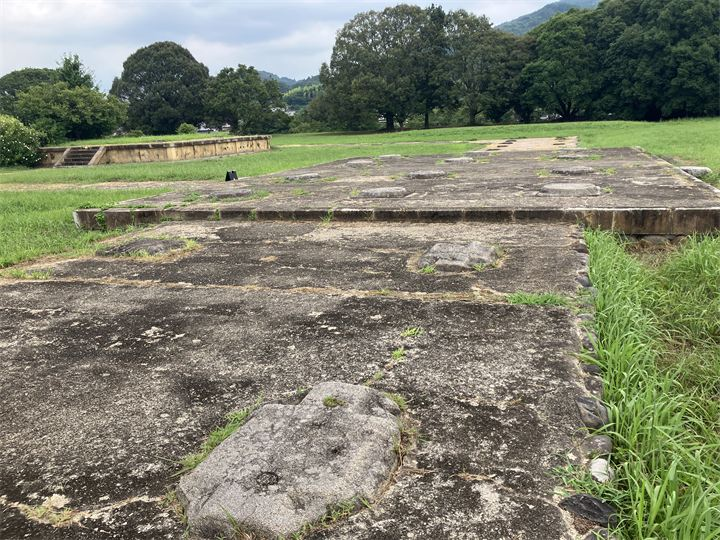

飛鳥四大寺のひとつ
飛鳥時代を代表する大寺院のひとつで、当時の繁栄を感じられる史跡です。

川原寺跡は、飛鳥時代に建立された四大寺のひとつに数えられる古代寺院跡です。 天智天皇の時代に建立されたとされ、飛鳥寺・薬師寺・大官大寺と並ぶ重要な寺院でした。 現在は塔跡や礎石が残り、飛鳥時代の大寺院の規模を感じることができます。
| 見学時間 | 自由見学 |
|---|---|
| 定休日 | なし |
| 料金 | 無料 |
| 所要時間 | 10〜20分 |
| 駐車場 | 堂の前駐車場 （徒歩1分・普通車500円） |
| アクセス |
近鉄飛鳥駅から徒歩35分。 奈良交通明日香周遊バス「川原」バス停から徒歩すぐ。 |
| 地図 | 地図はこちら |

飛鳥時代を代表する大寺院のひとつで、当時の繁栄を感じられる史跡です。

現在も残る礎石から、かつての大規模な伽藍配置を想像できます。
川原寺は、7世紀後半に建立されたと考えられる古代寺院です。 創建時には大規模な伽藍を備え、飛鳥時代の政治や仏教文化を支える重要な役割を果たしました。 平安時代以降に衰退しましたが、発掘調査によって当時の寺院配置や建物跡が明らかになっています。